A Historical Tour of Atomic Theory
Before we examine how new elements get created in stars, it is interesting to follow the history of how scientists, over a period of 200 years, discovered and developed theories about what things are made of. The discoveries are incredible when we consider what kind of instruments and tools were available at the time. For example, how do you develop an instrument that can detect atoms when you do not know what an atom is? How do you develop an instrument that detects the properties of entities that make up atoms?
We will visit the discoveries that profoundly changed our views of what things are made of and will follow the evolution of our knowledge of atoms and what they are made of.
Concept of Atoms
It is human nature to ask what is everything made of. It is human nature to ask: "What happens when I break a rock into smaller and smaller pieces?" Are the smaller pieces still rock, or do we eventually end up with something different, like building blocks which are indivisible? The concept of building blocks is reflected by how humans have developed language. We may have tens of thousands of words in our language (English has over 170,000 words), but they are all built out of a combination of only 26 characters. Written language is an ingenious invention where we can express all of our words in terms of a simple alphabet of characters. In fact, we are able to invent new words without having to add new characters to our alphabet.
About 2½ millennia ago, the Greeks proposed that everything was made of tiny indivisible particles. (This proposal should come as no surprise because the Greeks had an alphabet.) They called these particles "atoms", derived from the Greek word "atomos" which means "indivisible". There was of course no experimental evidence of these "atoms", the idea was just philosophy. The philosophy was that "atoms" came in all shapes and sizes, and this accounted for the different kinds of matter. The philosophy was totally subjective as there were no quantitative measurements or predictions.
Periodic Table Came First
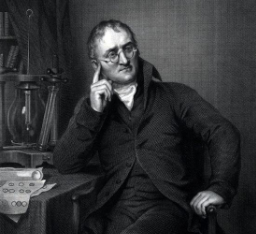
It's funny that the actual experimental verification of the existence of atoms came about sort of backwards. Before the existence of atoms was verified, their chemical properties were discovered first. By the early 1800's it was accepted that there were a number of "elements" that had certain chemical properties. For example, experimenters were able to isolate hydrogen and oxygen and were able to determine that water was composed of those two elements. John Dalton in the early 1800's experimentally determined that 16 weights of oxygen combine with 2 weights of hydrogen to form water. That led Dalton to go on to measure atomic weight of some elements. Please see the video contained in this link.
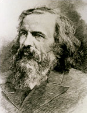
By the mid 1800's scientists realized that there was a relationship between atomic weight and chemical properties in a periodic way. This observation eventually led Dmitri Mendeleev in 1869 to create and publish his periodic table where elements are listed in columns and each column or parts of columns have similar chemical properties, such as how much a cubic centimeter of the element would weigh, what its melting point and freezing point are, how well it conducts electricity, and its readiness to combine with other elements to form molecules. This periodic table has since been modified so that elements are listed not by atomic weight, but by how many protons are in the nucleus (more about protons later).
Electrons
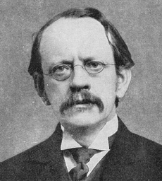
So far historically, we have a periodic table of elements and a notion of their chemical properties. In 1897 J.J. Thomson discovered that streams of electricity passing through a vacuum tube were some kind of negatively charged particles. These particles were associated with electricity and were called "electrons". He also discovered that the mass of an electron is about 1,000 times smaller than a hydrogen atom. This was the first piece of evidence that atoms were not indivisible after all and that atoms must themselves consist of additional components. Incidentally, Thomson's discovery that beams of electrons can be deflected by an electric field forms the basis of the cathode ray tube, which eventually formed the basis of oscilloscopes, and then televisions.
Atomic Nucleus Discovered and Measured
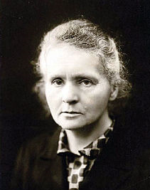
At about the same time as J.J. Thomson's discovery of the electron, numerous scientists had discovered that uranium spontaneously emitted some form of particles. They identified three kinds of new particles. They were called alpha, beta and gamma particles. Marie Curie performed an experiment with electric and magnetic fields and measured the deflection of the path of each particle as they passed through a detection area. She discovered that the three particles have different behavior when passing through an electric field. (1) Alpha and beta particles are deflected in opposite directions so they must have opposite charges. (2) Alpha particles had a smaller deflection in the magnetic field when compared to a beta particle, implying that alpha particles are heavier than beta particles. (3) Since gamma particles have no deflection in the magnetic or electric fields, gamma particles must have no charge. The behavior of the beta particle shows it to be an electron. The behavior of the alpha particle shows that it must be positively charged, but much more massive than an electron.
Marie Curie's work with alpha, beta, and gamma rays were part of her PhD thesis. She went on to become the first woman ever to win a Nobel Prize (Physics). She was in 1903 actually awarded 1/4 of the prize since she shared 1/2 of the prize with her husband, Pierre, with the other 1/2 going to Antoine Henri Becquerel. Later in 1911 she became the first ever person to be awarded a second Nobel Prize (this time in Chemistry). Not bad for a young woman born in Poland in the mid 1800's. She could not attend the men-only Warsaw University, so she had to take underground, secret non-credit courses. It is ironic that although her own country denied her a formal university education, the country now honors her greatness.
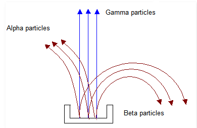
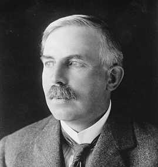
Just after J.J. Thomson's discovery of the electron, and Curie's work that discovered properties of the three kinds of radiation emanating from uranium, Ernest Rutherford (Thomson's student) made another huge discovery. In his famous Gold Foil Experiment, he aimed a beam of alpha particles at a thin (0.00004 cm) piece of gold foil. His expectation was that the alpha particles would pass right through the thin foil. The experiment showed that most of the alpha particles did pass directly through the foil with little deflection. However, a small fraction (1 in 20,000) of the particles were deflected more than 90 degrees. Rutherford observed that "most of the alpha particles passed straight through the gold foil without encountering anything large enough to significantly deflect their path". However, "a small fraction of the alpha particles came close to the gold atom nucleus as they passed through the foil". By passing close to a gold atom's nucleus, "the force of repulsion between the positively charged alpha particle and the gold nucleus deflected the alpha particle by a small angle". Occasionally, "an alpha particle traveled along a path that would eventually lead to a direct collision with the nucleus of a gold atom". When the collision happened, "the alpha particle was deflected through an angle of more than 90 degrees".
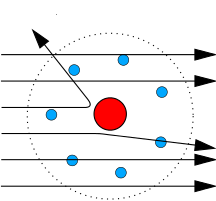
He actually went on to develop what is called the Rutherford Scattering Formula. From his results, Rutherford proposed a model for the structure of the atom. His model indicates that an atom has a positively charged center that he called a "nucleus", and that almost all of the mass of an atom is concentrated in an extremely small fraction of the total volume of the atom. Furthermore, Rutherford went on to calculate that the size of the nucleus is at least 10,000 times smaller than the size of the whole atom. The vast majority of the volume of an atom is just empty space.
Rutherford carried his experiments further and by refining his measurements, he and others discovered the source of the positive charge in the nucleus. He called this source protons, and he was able to actually measure the mass of a proton. Of course as with most discoveries, that raised another question. Scientists were able to isolate atomic nuclei and found that most nuclei weighed more than the combined weight of its protons. In the early 1930's James Chadwick (Rutherford's student) conducted an experiment where he accelerated alpha particles at beryllium foil and found that the collisions between the alpha particles and the beryllium nuclei created a stream of particles that had no electrical charge. He also discovered that these neutral particles had a mass very close to that of protons. He called these neutral particles neutrons. Here is an excellent 11 minute video that explains how protons, electrons, and neutrons were discovered.
The introduction of the neutron may be a little confusing to you. That is, if we have positively charged protons in the nucleus and negatively charged electrons outside of the nucleus, why would atoms need another (neutrally charged) particle? Is not the picture complete with just protons and electrons? Well consider this: if an atom has more than one proton in its nucleus, then since the protons all have the same positive charge, their electric charges should repel one another and the nucleus would have no cohesion. A complete answer to this question would involve a discussion of elementary particles called quarks. For now we will just say that all protons and neutrons are made of combinations of quarks. And the quarks that make up neutrons offer a "glue" or force that binds them to protons. So since every element except hydrogen has more than one proton, then every other element has neutrons in its nucleus.
From a human interest point of view, it is amazing that the major contributions to the discovery of electrons, protons and neutrons started with J.J. Thomson when he discovered the electron. His student Ernest Rutherford discovered the atomic nucleus and then the proton. Rutherford's student, James Chadwick then discovered the neutron. And the first view of the structure of the atom was complete. Please take a look at this interesting video that describes the experiments that these three scientists used in making their discoveries.
Once this elementary view of atomic structure was in place, scientists quickly realized that the properties of the different elements in the Periodic Table are determined by how many protons are in the nucleus. Since atoms are electrically neutral, the number of protons in the nucleus determines the number of electrons that are needed to balance the atom electrically (electrons have exactly the same magnitude but opposite electrical charge that a proton has). Please take a look at this video that explains this proton-electron relationship in atoms. And please view this video for an excellent presentation of how the proton-electron relationship determines where the element should be placed in the Periodic Table.
Fixed Electron Orbits?
During this approximately 100 years of discovery of atomic structure, scientists found that individual atoms are electrically neutral. That is, if you launched an atom through an electric field, it would not be deflected. So if an atom has a positively charged nucleus, then it must also contain electrons (negatively charged) that balance out the positive charge of the nucleus. So since electrons and the nucleus are of opposite charge, and opposite charges attract each other, what keeps the electrons from just falling into the nucleus? It would be nice to conclude that electrons must have kinetic energy (energy from their motion) and it is this energy that keeps them from falling into the nucleus. That is, they move around the nucleus at enough speed so that they cannot fall into the nucleus, just like planets do not fall into the sun. NO. WHY NOT? An electrically charged particle, when undergoing acceleration (changing direction even at a constant speed is acceleration) emits photons which have energy. So the poor electron would, by virtue of its motion, lose energy and eventually fall into the nucleus.
So that view of atomic structure with electrons viewed as classical particles orbiting a nucleus does not work. Therefore the cute image of the representation of atomic structure to the left does not work.
Classical Physics Description Stops at the Atom
At this point stop and consider that in the previous 2½ millennia mankind only had a philosophical notion that matter was made of small building blocks called atoms. During the span of only 100 years science went from philosophy to being able to measure the properties of some of the components that make up atoms. And up to the 1920's the view that these components were particles did lead to many discoveries. Since the idea of particles, however small, is part of our everyday experience it made sense to view the components of atoms as particles, and that the motion of these particles could be described by classical physics. (Motion as dealt with by classical physics predicts quite well the orbits of the planets.) However, by the argument expressed in the previous paragraph, the "particle" view breaks down. So science reached what could have been a real show stopper. Scientists actually found an example in nature where classical physics cannot be used in describing the motion of electrons in atoms.
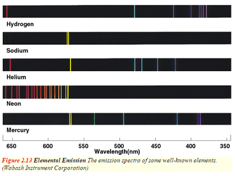
There were other experiments where the laws of classical physics could not explain the observations. One such experiment involved measuring the temperature rise in a solid when a given amount of heat was put into the solid. Classical physics predicts that when you apply a given amount of heat to the solid, its temperature would rise by the same amount, no matter what the starting temperature of a solid was. However, experiments showed that the temperature rise depended upon the starting temperature of the solid. Another experiment was simply looking at the spectrum of light from stars. Classical physics predicts that the light from heated elements should give off a continuous spectrum. Instead, experiments show that the different elements emit and absorb specific colors called spectral lines.
The decades of the 1910's and 1920's were some of the most exciting and productive decades in science. During this time, scientists began to develop theories that involved phenomena that were entirely foreign to everyday human experience. By everyday experience, consider three measurements: time, distance, and speed.
Consider time. We have a sense of seconds, minutes, hours, days, years, but only up to a certain point. When we get down to milliseconds (1/1,000 of a second), or nanoseconds (1/1,000,000) those times are out of our everyday experience. When we consider 1,000 years, that time period is way out of our everyday experience. A billion years? Who has a feeling for that amount of time? So for time, our everyday experience is roughly between 1 second and a lifetime (80 years).
Consider distance. We have a sense of millimeters, meters, kilometers, but again only up to a certain point. When we get down to nanometers (an atom is anywhere from 0.1 to 0.5 nanometer), those distances are out of our everyday experience. When we consider 20,000 kilometers, that distance is getting beyond our everyday experience (the flight distance from New York City to Manila is about half way around the world). But if we push the distance to 100,000 km or 1,000,000 km or 1,000,000,000,000,000,000 km (diameter of our galaxy), that is far beyond our everyday experience.
Consider speed. Our everyday experience easily includes speeds of animals running (about 50 km/h), cars on the freeway (110 km/h), planes flying through the sky (800 km/h), but 100,000 km/h (speed that the earth orbits the sun), or 1,079,000,000 km/h (speed of light), go beyond our everyday perception.
When we consider time, distance and speed on the scale of the universe, our human everyday experience only occupies an extremely small piece of that scale. Up until the 1910's and 1920's classical physics, which was based on our everyday experience, was an accurate description of our physical perception of the world in which we lived. What was exciting about the 1910's and 1920's was that scientists began to delve into distances, speeds, and times that were beyond our everyday experience and hence beyond the descriptions that classical physics gave us.
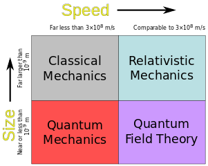
The chart to the left shows three additional sets of theories that have been added to classical physics that deal with speeds and distances (sizes) that are beyond our everyday experience. The horizontal axis labeled "Speed" represents speeds from slowest to fastest as we move from left to right. The vertical axis labeled "Size" represents sizes from smallest to largest as we move from bottom to top. For the very small sizes (sub-atomic components), classical physics breaks down entirely.
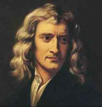
At the upper left rectangle is the physics of the everyday experience. This body of theories called Classical Mechanics works well for sizes much greater than nanometers and speeds far slower than the speed of light. The most famous of these theories are Newton's Laws of Motion and Newton's Law of Gravity.
Extension of Classical Physics: QM, SR, GR, QFT
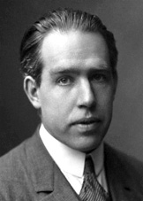
In the lower left rectangle is the physics of the very small. This body of theories called Quantum Mechanics works well for very small sizes and speeds far slower than the speed of light. Quantum Mechanics works well for describing the behavior of entities at the sub-atomic level. The problem of the electron losing energy as it moves around a nucleus is solved within Quantum Mechanics. In 1913 Niels Bohr proposed that electrons in an atom could jump between special orbits and the energy produced by these jumps caused the spectral lines that were observed in stars. I will make no attempt here in trying to explain Quantum Mechanics. I find that attempting to explain this subject and its implications is frustrating because our spoken and written language do not have words that can describe the results. Our spoken and written language is based on everyday experiences, and the questions answered by Quantum Mechanics are far from everyday experience. Now, if I were allowed to use Mathematics, that would be a successful, fulfilling, different kind of presentation but inappropriate for this article. However if you have about 50 minutes and a healthy curiosity here is an Entertaining explanation by Brian Greene from Columbia University.
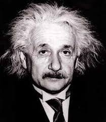
In the upper right rectangle is the physics of the large at high speeds. This body of theories is called Relativistic Mechanics. Einstein's Special Theory of Relativity (SR) and General Theory of Relativity (GR) describe motion and gravity just as do Newton's laws. In fact, Newton's laws are seen to be approximations of the more general SR and GR. For example, for speeds of 10% of the speed of light, Newton's formula for kinetic energy is in error by less than 1%. However for speeds of 50% of the speed of light, Newton's formula is about 20% in error, and for speeds of 80% of the speed of light the error is more than 50%.
One of the important and famous results from the GR is Einstein's famous equation: E = mc². This equation shows the exact relationship between mass (m) and its energy equivalent (E).
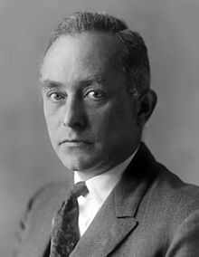
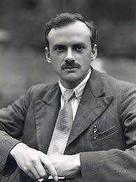
In the lower right rectangle of the Speed vs Size chart is the physics of the small at high speeds. This body of theories is called Quantum Field Theory (QFT). The QFT extends Quantum Mechanics to handle photons, which are "particles" of light. Photons are strange since they have no mass and travel at the speed of light (after all, they ARE light). Two of the major contributors to QFT are Max Born (left, above) and Paul Dirac (left, below).
Since everything other than Classical Mechanics is out of the realm of everyday human experience, spoken language falls way short of being able to describe phenomena of the small or high speeds. The only way to describe realms outside of everyday human experience is to use another much more precise language, Mathematics. The language of Mathematics precisely defines all terms, symbols and assumptions that are used in a theory. There is no room for vagueness or imprecision. When you write an equation such as Newton's Second Law of Motion: "When a force F is applied to an object with mass m, the object experiences an acceleration a" or F = ma. This equation is understood by people all over the world regardless of their language or culture.
This historical perspective only covered a small fraction of the work and the people that were involved with the development of atomic theory. There are many other scientists that I did not mention. By omitting references to their work I am not attempting to diminish their importance. As a tribute to many of those scientists, I display below a famous picture of a group of scientists that gathered in 1927 at the Solvay Conference in Brussels. Each person in this picture is a giant in the history of science. Please take the time to read each name. Even if you have never studied science, you will recognize many of the names. Anyone who has studied these subjects will remember and associate the names in this picture with the contributions that these giants made to the body of knowledge.
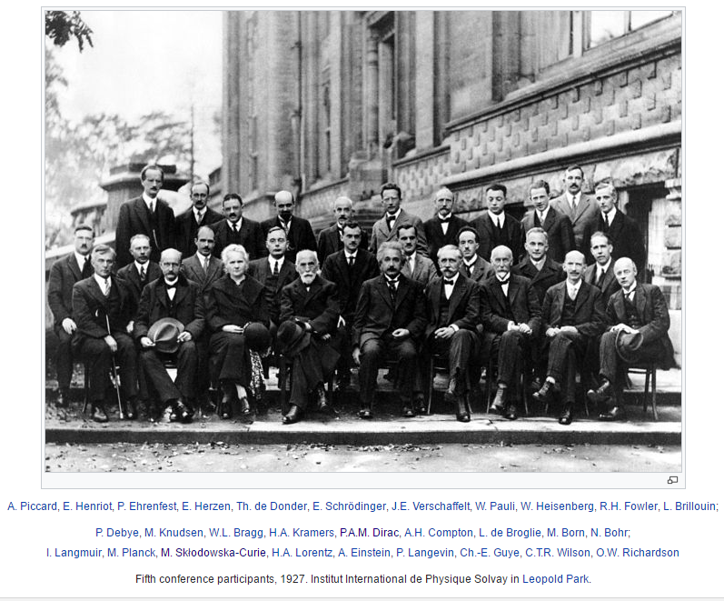